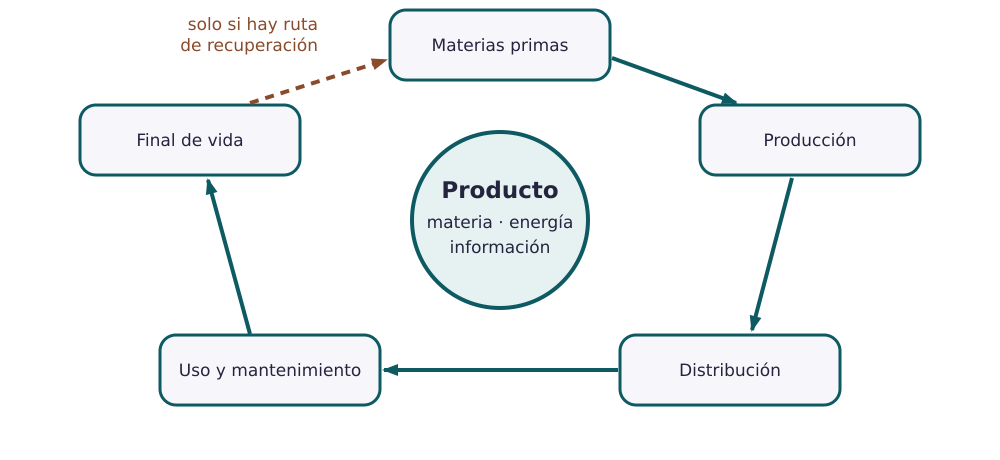

Contenido
Hoy conseguirás: dibujar el recorrido completo de vuestro producto, desde la materia prima hasta que se tira, y decidir cuáles son sus dos impactos más importantes.
Seguir el producto desde la mina hasta el contenedor
El ciclo de vida físico es lo que le pasa al producto como objeto: de dónde sale su material, cómo se fabrica, cómo viaja, cómo se usa y qué pasa al tirarlo. Tiene cinco etapas.

AmpliarNo lo confundas con el ciclo comercial
El ciclo comercial habla de las ventas: el producto se lanza, se vende cada vez más, se estanca y deja de venderse. En esta unidad trabajamos el físico.
En cada etapa algo entra (material, energía, agua) y algo sale (el producto, residuos, emisiones). Lo que sale y daña al ambiente o a las personas es un impacto.
El ciclo de la botella
| Etapa | Entra | Sale | Impacto principal |
|---|---|---|---|
| Materias primas | Mineral de hierro, cromo y níquel; petróleo para el tapón | Tubo de acero inoxidable, bolitas de plástico | Minería y mucha energía para fundir el acero |
| Producción | Tubo de acero, electricidad, pintura | Botellas, recortes de acero, botellas rechazadas | Consumo de energía; recortes que hay que reciclar |
| Distribución | Cajas de cartón, gasóleo del camión | Botellas en la tienda | Emisiones del transporte |
| Uso | Agua y jabón para lavarla | Agua sucia | Agua de cada lavado (poca, pero durante años) |
| Final de vida | Botella usada | Acero que se recicla; tapón y junta que se tiran | Si va a la basura normal, el acero no se recupera |
No hace falta saber cifras exactas. Si no hay un dato en el expediente ni en una fuente, no lo inventéis: escribid qué dato faltaría («no sabemos cuánta energía gasta el pulido»).
¿Qué impacto importa más?
No todos los impactos merecen el mismo esfuerzo. Para elegir, haceos tres preguntas:
- ¿Cuánto daño hace? No es lo mismo un poco de agua que una tonelada de CO₂.
- ¿Cada cuánto pasa? Una vez en la vida del producto o cada día.
- ¿Podemos hacer algo? Si la empresa puede reducirlo, merece la pena.
Dos impactos prioritarios de la botella
1. Fundir el acero. Creemos que hace mucho daño (fundir acero gasta mucha energía; no tenemos la cifra exacta), pasa una vez por botella, y la empresa puede reducirlo comprando acero con parte reciclado.
2. La botella acaba en la basura normal. Daño medio (se pierde todo el acero), pasa con muchas botellas, y la empresa puede ayudar: poner en la etiqueta que el cuerpo va al punto limpio.
Palabras nuevas
- Ciclo de vida físico
- Lo que le pasa al producto como objeto, de la materia prima a la basura o al reciclaje.
- Materia prima
- El material de la naturaleza del que sale el producto. Mineral de hierro.
- Impacto
- Un efecto de una etapa sobre el ambiente o las personas. Emisiones del camión.
- Final de vida
- Lo que pasa cuando el producto ya no se usa: reutilizar, reparar, reciclar o tirar.
- Reciclar
- Convertir el material del producto viejo en materia prima para otro nuevo.
- Dibujad el ciclo de vuestro producto con las cinco etapas (a mano y foto, o con formas en el documento).
- Completad la tabla de la plantilla: qué entra, qué sale y el impacto principal de cada etapa. Los datos salen del expediente.
- Elegid los dos impactos más importantes y responded a las tres preguntas para cada uno.
Cómo sabéis que está bien
- ☐ Están las cinco etapas, también el uso y el final de vida.
- ☐ Cada etapa tiene algo que entra y algo que sale.
- ☐ Si la flecha vuelve al principio, decís qué vuelve de verdad y cómo.
- ☐ Cada impacto prioritario responde a las tres preguntas.
Compruébalo
Ordena las cinco etapas de la vida de un producto, de la primera a la última.
- Sacar y preparar las materias primas
- Fabricar, montar y comprobar
- Embalar y distribuir
- Usar y mantener
- Final de vida: reutilizar, reparar, reciclar o tirar